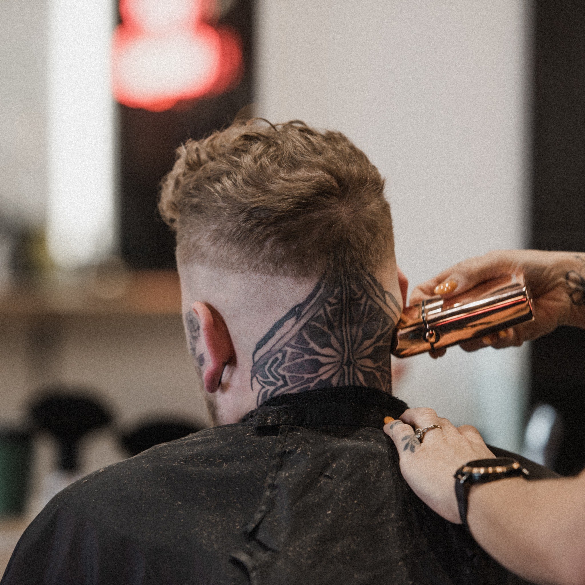

L’expérience
Le rituel classique, exécuté avec soin du début à la fin.
- Préparation peau et poil pour un passage de lame doux et précis.
- Travail méthodique pour une finition lisse et régulière.
- Finalisation pour laisser la peau fraîche, pas agressée.
Rasage traditionnel
Le rasage traditionnel chez Les Barbares : geste précis, calme et confortable, finition ultra propre et rituel du barbier pour repartir frais et net dans nos succursales du Grand Montréal.

L’expérience
Ce qui est inclus
Pour qui ce service est idéal
Réservation